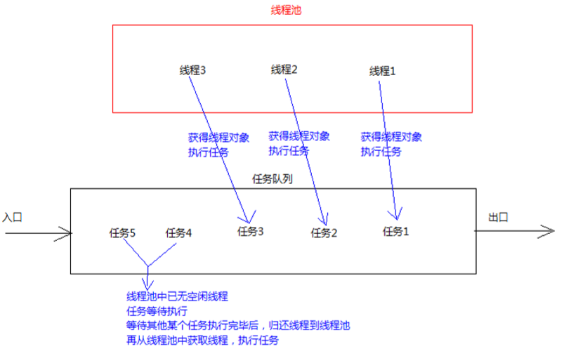

线程池思想概述
当我们要使用线程的时候就去创建一个线程时，虽然实现方便，但是会出现问题：如果并发的线程数量很多，并且每个线程都是执行一个时间很短的任务就结束了，这样频繁创建线程就会大大降低系统的效率，因为频繁创建线程和销毁线程需要时间。
线程池的概念
线程池：其实就是一个容纳多个线程的容器，其中的线程可以反复使用，省去了频繁创建线程对象的操作， 无需反复创建线程而消耗过多资源。
/
合理利用线程池能够带来三个好处：
1. 降低资源消耗。减少了创建和销毁线程的次数，每个工作线程都可以被重复利用，可执行多个任务。
2. 提高响应速度。当任务到达时，任务可以不需要的等到线程创建就能立即执行。
3. 提高线程的可管理性。可以根据系统的承受能力，调整线程池中工作线线程的数目，防止因为消耗过多的内存，而把服务器累趴下(每个线程需要大约1MB内存，线程开的越多，消耗的内存也就越大，最后死机)。
线程池的使用
Java里面线程池的顶级接口是 java.util.concurrent.Executor ，但是严格意义上讲 Executor 并不是一个线程池，而只是一个执行线程的工具。真正的线程池接口是 java.util.concurrent.ExecutorService
Executors类中有个创建线程池的方法如下：
public static ExecutorService newFixedThreadPool(int nThreads) ：返回线程池对象。(创建的是有界线程池,也就是池中的线程个数可以指定最大数量)
获取到了一个线程池ExecutorService 对象，
使用线程池对象的方法如下：
public Future<?> submit(Runnable task) :获取线程池中的某一个线程对象，并执行。Future接口：用来记录线程任务执行完毕后产生的结果。线程池创建与使用。
使用线程池中线程对象的步骤：
1. 创建线程池对象。
2. 创建Runnable接口子类对象。(task)
3. 提交Runnable接口子类对象。(take task)
4. 关闭线程池(一般不做)。
1 package demosummary.threadpool;
2
3 public class MyRunnable implements Runnable{
4 @Override
5 public void run() {
6 System.out.println("你好,我想要找某某老师教我Java");
7 try {
8 Thread.sleep(5000);//等待五秒后,等老师过来
9 } catch (InterruptedException e) {
10 e.printStackTrace();
11 }
12 System.out.println("老师过来了~" + Thread.currentThread().getName());
13 System.out.println("今天老师教我了一些基础Java,然后让我回去多练习");
14 }
15 } 1 package demosummary.threadpool;
2
3 import java.util.concurrent.ExecutorService;
4 import java.util.concurrent.Executors;
5
6 public class ThreadPoolTest {
7 public static void main(String[] args) {
8 //先创建一个线程池对象
9 ExecutorService service = Executors.newFixedThreadPool(5);
10 //创建Runnable实例对象
11 MyRunnable mr = new MyRunnable();
12
13 /**
14 * 自己创建线程对象的方式
15 * Thread t = new Thread(r);
16 * t.start(); ‐‐‐> 调用MyRunnable中的run()
17 */
18 //从线程池中获取线程对象,然后调用MyRunnable中的run方法
19 service.submit(mr);
20 //再次从线程池中获取线程对象,然后调用其run方法
21 service.submit(mr);
22 service.submit(mr);
23 // 注意：submit方法调用结束后，程序并不终止，而是把线程归还到线程池中(类似共享充电宝),是因为线程池控制了线程的关闭。
24 // 将使用完的线程又归还到了线程池中
25 // service.shutdown(); // 关闭线程池(一般推荐不关闭)
26 }
27 }